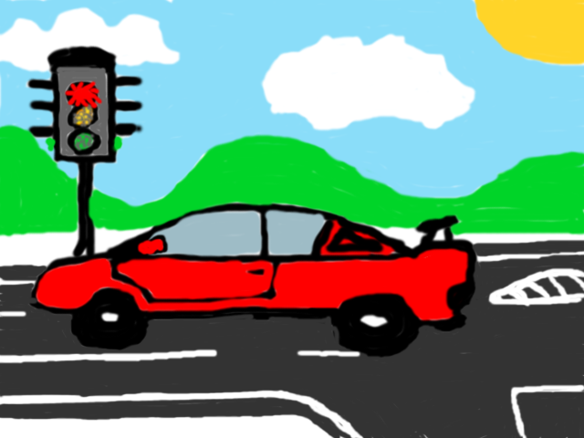
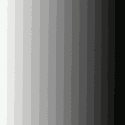

castle.bmp
Maroš Gonda (325171)
Filip Benčo (359675)
PA171 – Digital Image Filtering
Jar 2013
Na začiatku sa do slovníku zapíšu všetky znaky abecedy. Následne sa opakujú tieto kroky:
Na vstupe sa nájde najdhlšia fráza, ktorá už v slovníku existuje. Jej index sa zapíše na výstup.
Nájdená fráza sa zo vstupu odstráni.
Ako nová fráza sa použije nájdená fráza + prvý znak zo vstupu.
Na začiatku dekompresie sa do slovníku zapíšu všetky znaky abecedy. Následne sa opakujú tieto kroky:
Zo vstupu sa odstráni index a na výstup sa pridá odpovedajúca fráza (podľa už nájdených fráz).
Do slovníku sa doplní fráza z minulého kroku + prvý znak fráze z aktuálneho.
Skomprimovaný súbor je identifikovaný znakmi LZW a minimálnou dĺžkou kódu.
|
LZW |
MAX_CODE_LEN |
INDEXY ZAKÓDOVANÝCH REŤAZCOV |
Obe časti aplikácie (kompresia, dekompresia) sa spúštajú z príkazového riadku.
lzw.exe inputFile outputLZWFile
inputFile – vstupný súbor, ktorý chceme skomprimovať
outputLZWFile – výstupný súbor, ktorý bude obsahovať skomprimovaný originál
lzw.exe -d/--decode lzwFile outputFile
-d/--decode – príznak určujúci, že sa jedná o spätnú dekomrpesiu
inputLZWFile – vstupný súbor obsahujúci dáta, skomprimované navrhnutou LZW kompresiou
outputFile – výstupný už dekomprimovaný súbor
Porovnania veľkostí originálnych a komprimovaných súborov:
|
Originálny súbor |
Komprimovaný súbor |
Kompresný pomer |
||||
|
Názov |
Schéma |
Rozlíšenie |
Veľkosť |
Názov |
Veľkosť |
|
|
auto.bmp |
24bit RGB |
640 x 480 |
921 722 B |
auto.lzw |
138 964 B |
15% |
|
dots.bmp |
8bit Gray |
64 x 64 |
5 242 B |
dots.lzw |
2 262 B |
43% |
|
gradient.bmp |
16 indexed colors |
256 x 256 |
32 954 B |
gradient.lzw |
4 798 B |
14,6% |
|
text.txt |
ASCII |
35 B |
text.lzw |
43 B |
123% |
|
|
sample.bmp |
24bit RGB |
10 x 10 |
522 B |
sample.lzw |
470 B |
90% |
|
Reálne foto |
||||||
|
castle.bmp |
24bit RGB |
1600 x 1200 |
5 760 122 B |
Castle.lzw |
8 096 826 B |
140,5% |
|
castle-indexed.bmp |
256 indexed colors |
1600 x 1200 |
1 921 146 B |
Castle-indexed.lzw |
2 480 741 B |
129% |
|
castle-indexed32.bmp |
32 indexed colors |
1600 x 1200 |
1 920 250B |
Castle-indexed32.lzw |
379 339 B |
20% |
LZW bezstratová kompresia je veľmi účinný typ kódovania dát pre často sa vyskytujúce hodnoty, kde kompresné pomery dosahovali vynikajúcich hodnôt (vhodné pre veľké obrazy s malým počtom indexovaných farieb, kreslené obrazy používajúce veľmi často rovnaké odtiene farbieb, ale aj dlhší text). Naopak, úplne nevhodná je na použitie u značne heterogénnych dát s množstvom diferencovaných hodnôt (veľké fotografie prevedené z formátu JPEG, krátky text málo sa opakujúcich písmen), kde kompresné pomery dosahovali aj hodnoty presahujúce 100%, a teda komprimovaný súbor mal ešte väčšiu veľkosť než obrázok pôvodný.

auto.bmp
dots.bmp

gradient.bmp
sample.bmp
castle.bmp